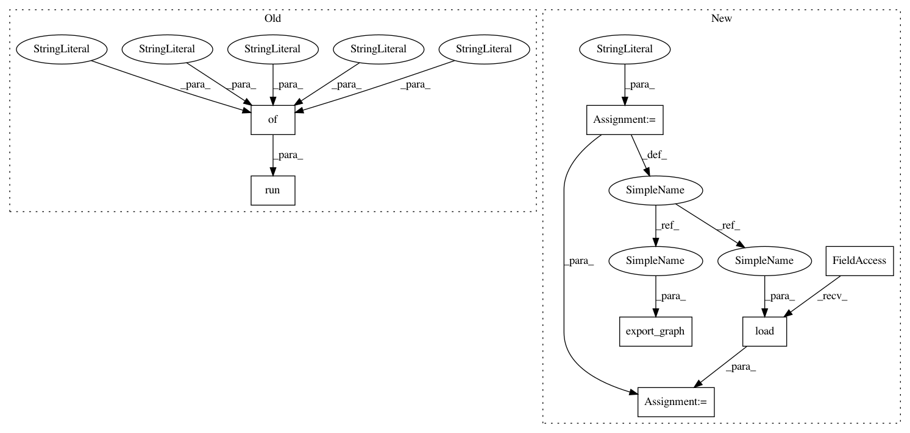

52fbf7b4ac45472fd1d0ae8e5ea169efb8552f8b,test/backend/test_dynamic_shape.py,TestDynamicShape,test_slice,#TestDynamicShape#,665
Before Change
np.testing.assert_almost_equal(output["S"], x[0:-8, :, -7:20])
else:
x = self._get_rnd_float32(shape=[1000]).reshape([10, 10, 10])
output = tf_rep.run({
"X": x,
"starts": starts,
"ends": ends,
"axes": axes,
"steps": steps
})
np.testing.assert_almost_equal(output["S"], x[0:-8, :, -7:20])
// test case 3 with non-default steps
axes = [0, 1, 2]
After Change
])
tf_rep = onnx_graph_to_tensorflow_rep(graph_def)
// export to tf.saved_model
model_path = "test_dynamic_shape/slice"
tf_rep.export_graph(model_path)
// load the saved_model back
tf_model = tf.saved_model.load(model_path)
if legacy_opset_pre_ver(10):
x = self._get_rnd_float32(shape=[1000]).reshape([10, 10, 10])
tf_model_output = tf_model(X=x)
In pattern: SUPERPATTERN
Frequency: 3
Non-data size: 7
Instances
Project Name: onnx/onnx-tensorflow
Commit Name: 52fbf7b4ac45472fd1d0ae8e5ea169efb8552f8b
Time: 2020-11-03
Author: wtsang@us.ibm.com
File Name: test/backend/test_dynamic_shape.py
Class Name: TestDynamicShape
Method Name: test_slice
Project Name: onnx/onnx-tensorflow
Commit Name: 52fbf7b4ac45472fd1d0ae8e5ea169efb8552f8b
Time: 2020-11-03
Author: wtsang@us.ibm.com
File Name: test/backend/test_dynamic_shape.py
Class Name: TestDynamicShape
Method Name: test_slice
Project Name: onnx/onnx-tensorflow
Commit Name: 52fbf7b4ac45472fd1d0ae8e5ea169efb8552f8b
Time: 2020-11-03
Author: wtsang@us.ibm.com
File Name: test/backend/test_dynamic_shape.py
Class Name: TestDynamicShape
Method Name: test_batch_normalization
Project Name: onnx/onnx-tensorflow
Commit Name: 52fbf7b4ac45472fd1d0ae8e5ea169efb8552f8b
Time: 2020-11-03
Author: wtsang@us.ibm.com
File Name: test/backend/test_dynamic_shape.py
Class Name: TestDynamicShape
Method Name: test_non_max_suppression